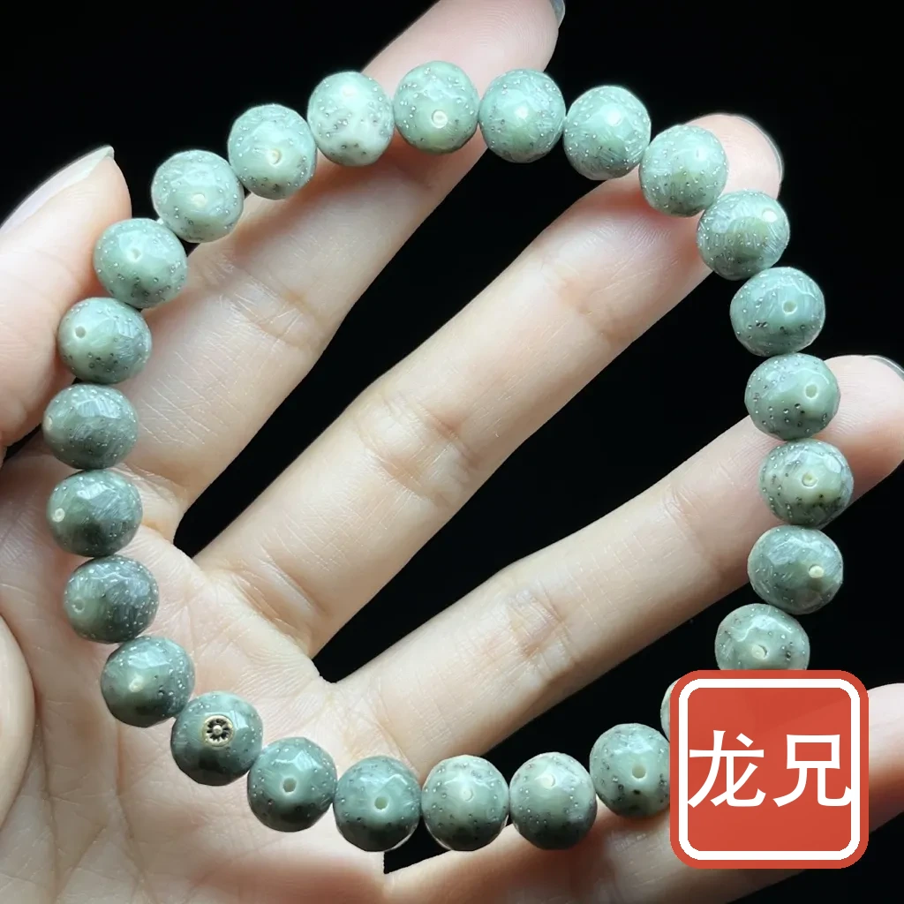
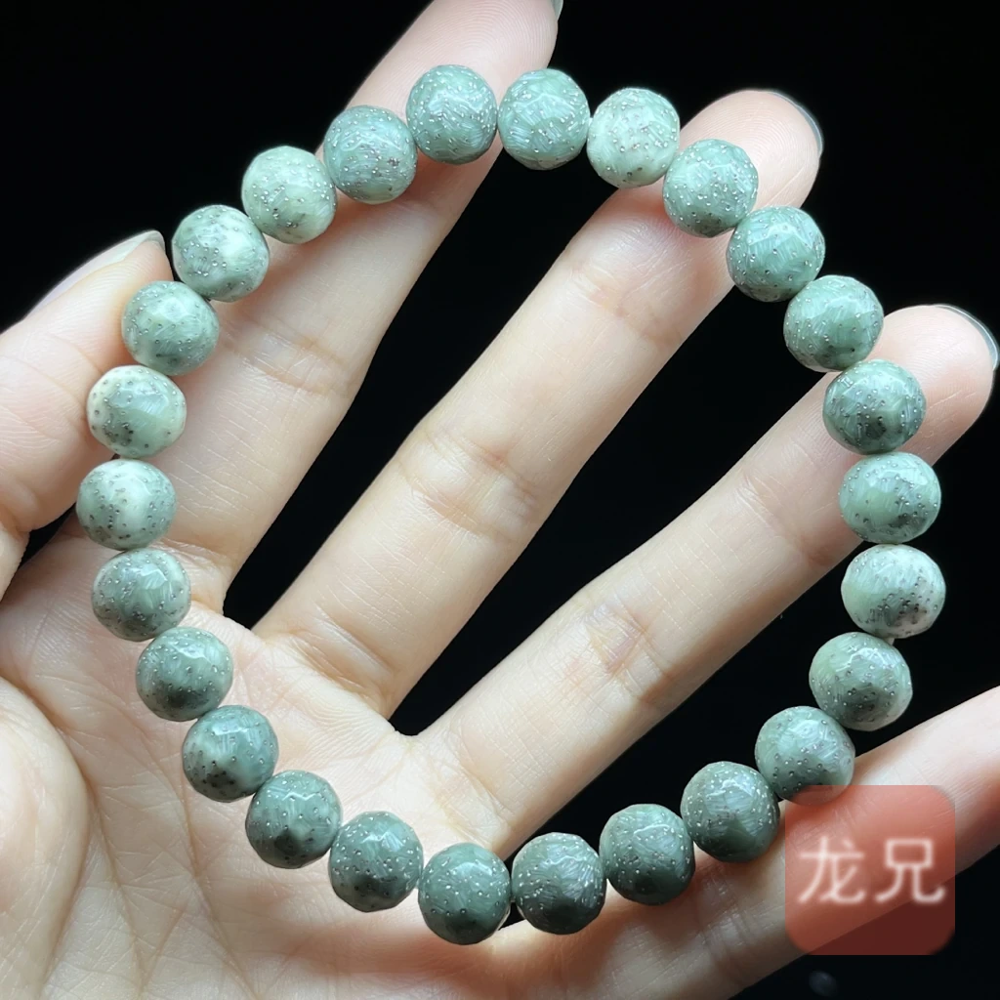
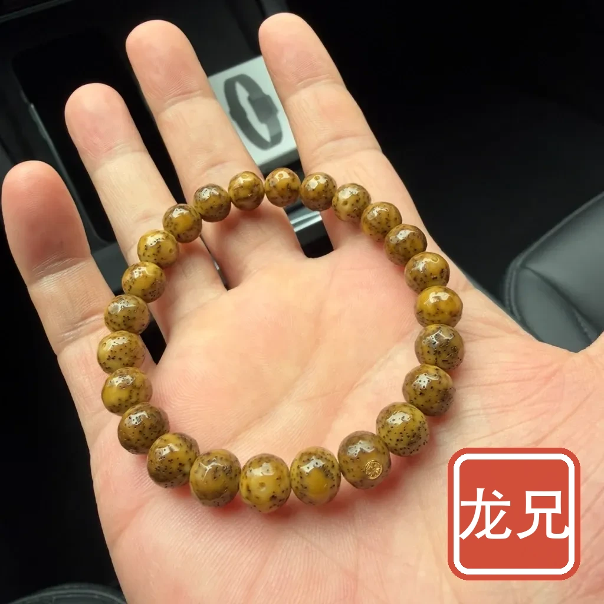
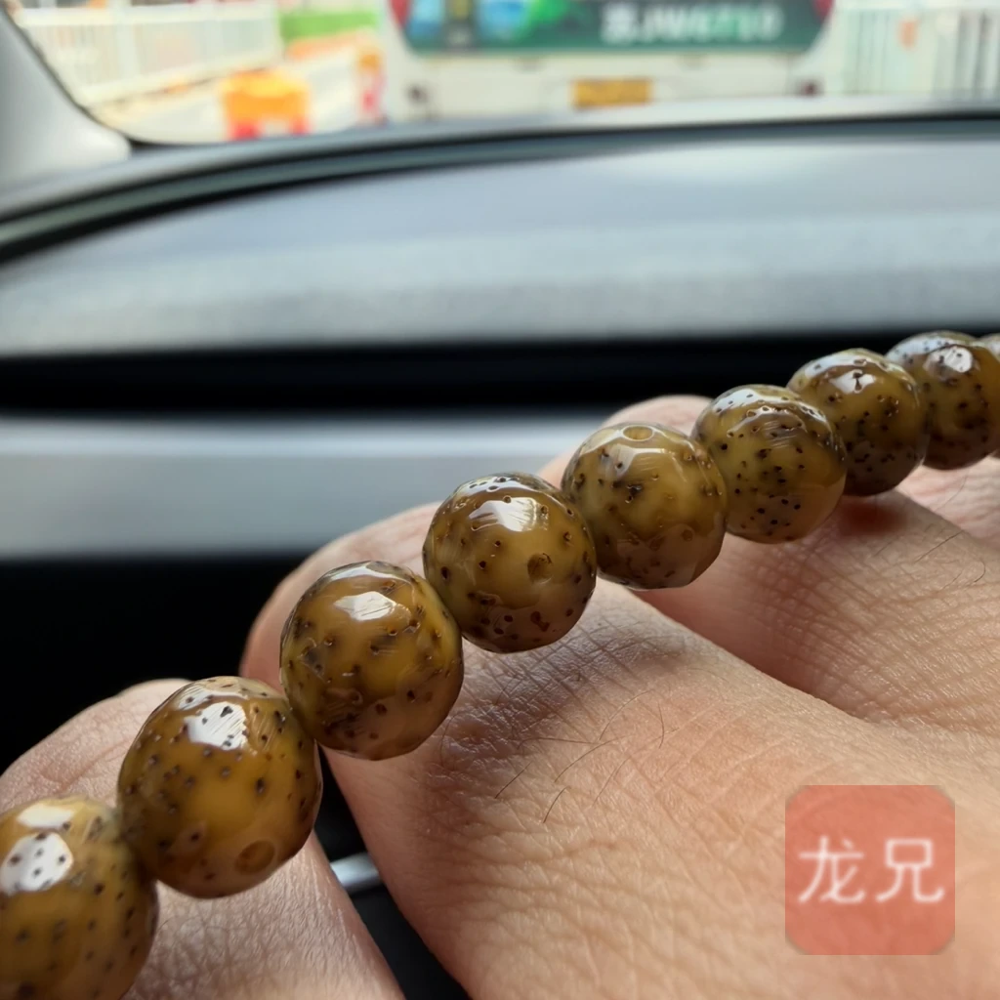

文玩手串
星月菩提：怎么挑、怎么盘，两页讲完
本板块目前只做星月菩提一个品种，其他品种后续再补。
实物实拍：同一串，九个月
下面四张都是站主自己拍的，同一串星月菩提——先看刚入手时的样子，再看九个月后。点任意一张可以放大，星点和月眼的变化看得更清楚。




这是一串的实测，不是通用曲线：起点是阴皮，走色路线就和「顺白」那一套不一样——完整记录与拍摄说明见《盘养手册》第二节「实物记录」；照片里「月」和「星」怎么认，见《选购指南》第三节「月」与第四节「星」。
一串星月值不值得看，只由四件事决定：料（哪里产的）、月（正不正）、星（细不细、稀不稀）、密度（压不压手）。其余说法基本是围绕这四点的包装。下表是速判口径；细节分两页——买之前看《星月菩提》，买之后看《盘养手册》。
| 看什么 | 记住这一句 |
|---|---|
| 料 | 只认三档：海南（毛感）> 老挝 > 三国（泰／越／柬）。市面上的「广西料」多是越南、老挝货转手；「五星帝王料」这个说法不存在。 |
| 月 | 正月最好，弦月次之，无月、假月直接放弃——磨没了就是磨没了，盘多久也长不回来。 |
| 星 | 月朗星稀、星细如针、分布均匀。连星、爆星、糊成一片的一律不选。 |
| 密度 | 两珠相撞清脆如瓷是好料，发闷是糠；同尺寸越压手越好。 |
| 沉水 | 不沉水的一定是差籽；但沉水的也不一定好——水煮嫩籽也沉。只当排除法用，别当金标准。 |
| 工艺 | 水磨籽的星眼会萎缩脱落、白色部分发软、表面发闷；漂白籽惨白透星，很快变黄开片。 |
| 说法 | 一堆名字其实分属三个维度：原生态／脱脂／染色是加工方式，顺白／阴皮／玉化／留白是天然外观，陈籽／老料是原料状态。别把不同维度的词混着比高低；「全玉化」业内两派说法正好相反，只当描述、别当等级。 |
| 尺寸 | 常规直径 8–10mm 最好找；直径 6mm 以下打磨过度，不一定有月；直径 13mm 以上正月概率反而很低。 |
| 价位 | 海南料原籽行情折算约 350 元/斤，一斤中等籽约 200 颗——一条 108 颗明显低于 400 元，先怀疑不是海南料。 |
品种
当前 1 个知识指南
当前 1 篇新手最常问的三件事
「星月菩提」是菩提树结的吗？
不是。真正的菩提树是桑科榕属（Ficus religiosa），果实像无花果，种子又小又软，根本磨不成珠子。「菩提子」是个泛称，指坚硬耐磨、可串可计数的各类植物种子；星月菩提的真身是棕榈科省藤属黄藤（Calamus jenkinsianus）的种子，跟菩提树没有半点关系。搞清这一点，商家那套「菩提神树」的故事就不攻自破了。
品相里哪一项最不能让？
月。无月、假月一票否决——磨没了就是磨没了，盘多久也长不回来。其次是星点连成线（连星）或糊成一片（爆星、烟花纹）。密度差还能靠盘养补一部分，月不正没法救。
另外留个心眼：市面有「洗月（铣月）」工艺，用磨头把大小颜色不一的月铣成一样，甚至给磨掉月的籽重新铣出月来，所以「颗颗月正」不一定都是天然长的。它是机加工产物，不算假货，但溢价不该按天然正月算。
一条 108 颗卖 199 元，说是海南料，能信吗？
基本不能。公开行情里海南料原籽约 70 万元/吨（≈350 元/斤），一斤中等大小原籽约 200 颗；挑掉阴皮、嫩籽、品相不佳的之后，运气好才出得了一条 108 颗。光原料就不止这个价。
低于原料成本的「海南料」，大概率是三国料或老挝料贴标——这两者的原籽价大约只有海南料的三四成。当价格明显低于原料成本时，先怀疑材质，而不是庆幸运气。
📚 资料来源
- 植物学与名称：植物智 · 中国植物物种信息系统（黄藤 Calamus jenkinsianus 的科属与形态核对）、果壳网《你知道「菩提子」是什么吗？》（「菩提子」泛称与各类原植物考据）
- 「星」「月」成因与产地俗称：人民网公益频道《益生活：带你认识一下各路「菩提子」》（2014-05-16）
- 官方监管与消费提示：国家市场监督管理总局传统工艺市场「打假清源」联合执法行动通报（2026-09：全国立案 769 件、涉案金额 6558 万元、21 起移送司法机关）
- ⚠️ 口径说明：产地分级、月相与密度判断、价位区间属于行业通行说法与公开行情观察，不是国家标准，各地口径有出入。本页只保留多家说法一致、且能被实物验证的部分；贵重物品请送具备 CMA／CNAS 资质的机构鉴定后再决策。